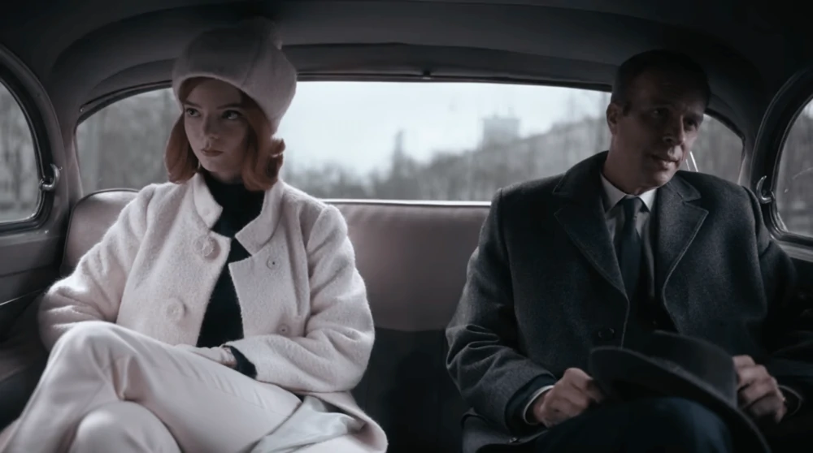

Series photos



The Queen's Gambit is a 2020 American coming-of-age period drama streaming television miniseries based on the 1983 novel of the same name by Walter Tevis. The title refers to the "Queen's Gambit", a chess opening. The series was written and directed by Scott Frank, who created it with Allan Scott, who owns the rights to the book. Beginning in the mid-1950s and proceeding into the 1960s, the story follows the life of Beth Harmon (Anya Taylor-Joy), a fictional chess prodigy on her rise to the top of the chess world while struggling with drug and alcohol dependency. Netflix released The Queen's Gambit on October 23, 2020. After four weeks it had become Netflix's most-watched scripted miniseries, making it Netflix's top program in 63 countries.[1][2] The series received critical acclaim, with particular praise for Taylor-Joy's performance, the cinematography, and production values. It also received a positive response from the chess community for its accurate depictions of high-level chess, and data suggests that it increased public interest in the game.[3][4] The Queen's Gambit won eleven Primetime Emmy Awards, including Outstanding Limited or Anthology Series, becoming the first show on a streaming service to win the category.[5] The series also won two Golden Globe Awards: Best Limited Series or Television Film and Best Actress – Miniseries or Television Film for Taylor-Joy. She also won the Screen Actors Guild Award for Outstanding Performance by a Female Actor in a Miniseries or Television Movie. bigger
The Queen's Gambit follows the life of an orphan chess prodigy, Elizabeth Harmon, during her quest to become an elite chess player while struggling with emotional problems, drugs and alcohol dependency. The title of the series refers to a chess opening of the same name. The story is set in the mid-1950s and 1960s.[6] In 1950s Lexington, Kentucky, an eight-year-old Beth, having lost her mother in a car crash, is taken to an orphanage where she is taught chess by the building's custodian, Mr. Shaibel. As was common at the time, the orphanage dispenses daily tranquilizer pills to the girls to "balance their disposition",[7][8] which turns into an addiction for Beth. She quickly becomes a strong chess player due to her visualization skills. A few years later, Beth is adopted by childless suburban couple Alma and Allston Wheatley. As she adjusts to her new home, Beth enters a chess tournament and wins despite having no prior experience in competitive chess. Alma is initially resistant to Beth's interest in chess, but after Beth wins her first tournament, Alma is fully supportive of her adoptive daughter's sojourns to enter various chess competitions. She develops friendships with several people, including former Kentucky State Champion Harry Beltik, United States National Champion Benny Watts, and journalist and fellow player D.L. Townes. As Beth rises to the top of the chess world and reaps the financial benefits of her success, her drug and alcohol dependency worsens. With help from her oldest friend Jolene, whom she grew up with in the orphanage, she prepares for her biggest challenge yet, a major international chess tournament against the world's best players in Moscow.
| First released | October 23, 2020 |
|---|---|
| Seasons | 1 |
| Episodes | 7 |
| Run time | 46-67 minutes |
| Genre | Drama |
| Network | Netflix |
| Distributor | Netflix |
| Year | Award | Category | Nominee(s) | Result |
|---|---|---|---|---|
| 2021 | Golden Globe Awards | Best limited series or TV movie | The Queen's Gambit | won |
| Best actress in a limited series or TV movie | Anya Taylor-Joy | won |